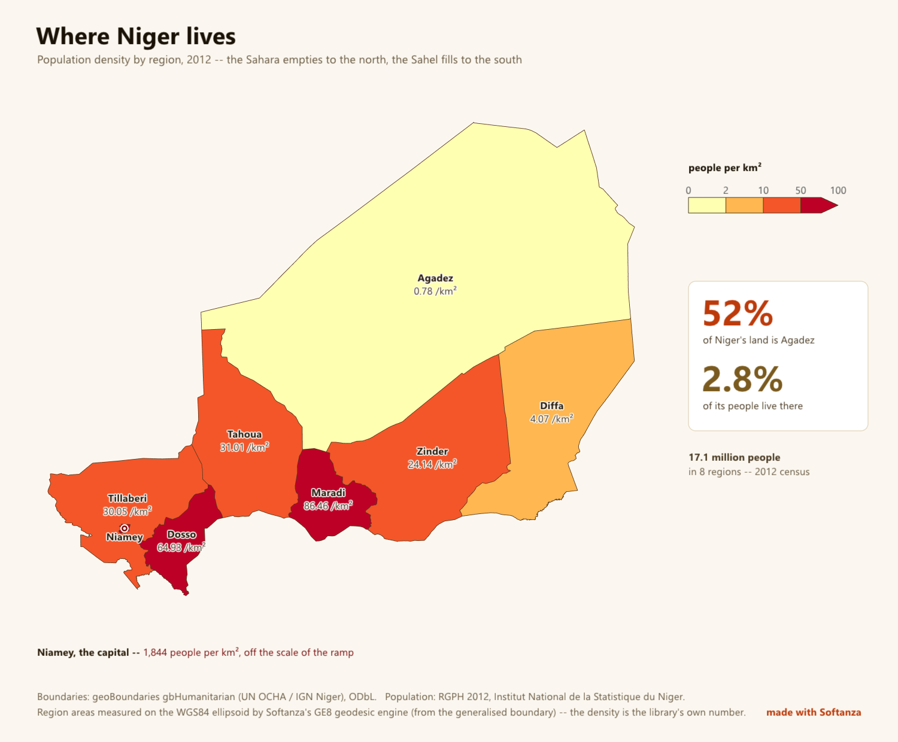

Born in Africa
Softanza is designed by a Tunisian, between Tunisia, Niamey and Paris. Its references are a bank and a restaurant, each attested by a document. Its course has a Hausa edition, a draft that awaits a native reviewer: none of its 35 units has been reviewed yet. Its machine, Harobanda, is named for the bridge across the Niger River that joins the two banks of Niamey, "because the machine likewise joins a solution's promises to the hardware that keeps them".

Sonibank, Niamey
Organizium Standard Edition, under licence, on the bank's internal network. The installation guide delivered to the bank attests the reference.
RestoLean, Lyon
A platform for neighbourhood commerce, carried by the owner of a couscous restaurant. Its ergonomic rule: at most two gestures per action.
Nothing else is a reference until a document proves it. This site quotes no number of countries and no number of developers. The Zarma edition of the course does not exist yet: it is an invitation.